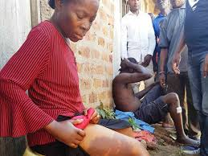

The story about how police treat people treat people in Soweto and the need to a change the perspective of the whites .The role of the south African native and how to change their way of thinking and try to solve the there mentality .
The police will arrest children who are mixed and take them to separate them from there parent , they separate parents and kid. The police bomb the protesting and beat them up, the police were brutal and had no mercy on the protestants.
How the police arrest black people crossing the roads with no mistake and jail them for years while white people do not get the same treatment. police arrest white child from the street of blacks and take them away since they have the same color as white and they do not belong there.
The police were everywhere in the street it was a police states they use to call it , communication was monitored and people were encouraged to snitch. Trevor mother was lucky since she wasn't found with his dad because police arrest the black women associate with whites
The police arrest Trevor with other dance partners when they were going to a performance and the plant a gun on them.in the cells the are beaten by them. Trevour is forced to say what and say that the other guys had a gan and when he refused to do so they threw him back in the cell.
Trevour has the
Noah is dismayed when his stepfather, Abel, begins abusing him and his mother. Noah also learns a hard lesson about how South African society viewed female domestic violence victims when he saw how the local police discredited his mothers claims of abuse. Eventually, his mother leaves Abel after he nearly kills her. Discuss how you think this part of his life affected Noahs future, particularly given his mothers wishes for him to live a life better than her own. How did this experience of abuse shape him and his relationship with his mother?
The police in kenya abuse people and beat them.They arrest demostrators and them in the cell wihout solid reain just like how the police in the book born a crime treat people .The police are so brutal that some time people fear the police more than the thugs.
The Kenya Police, efforts are being made to reform the force. Kenyan policemen are poorly paid and have to make use with archaic housing that has not been expanded or renovated since the 1970s. This has made them very susceptible to corruption and crime. Extortion and bribery are not unknown practices and the Kenyan people rank the police among the most corrupt bodies in the country. This has made them to be corrupt .
The police are enforced and they provide security to people and are easy access to people.The recent years the police have responded quickly to attacks. The recent attack in Dusit the police were easy to the building. They reach there in time and this enables them to save the lives of Kenyans. Though the attack was sudden the police were able to defeat the attackers.